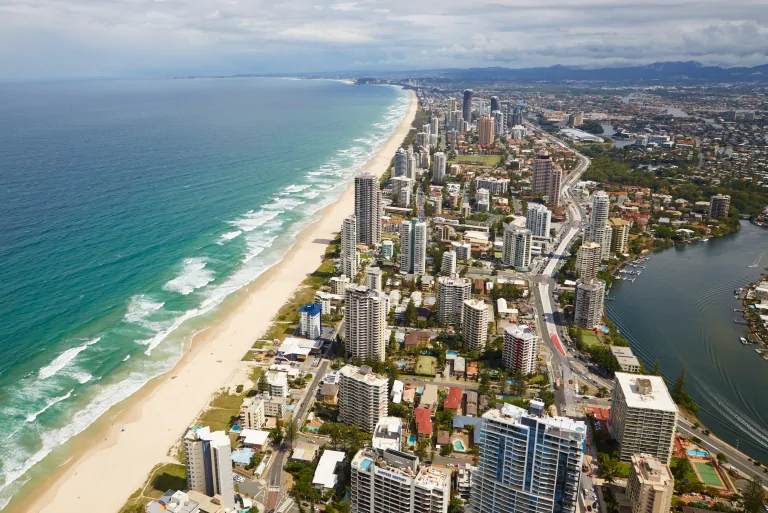
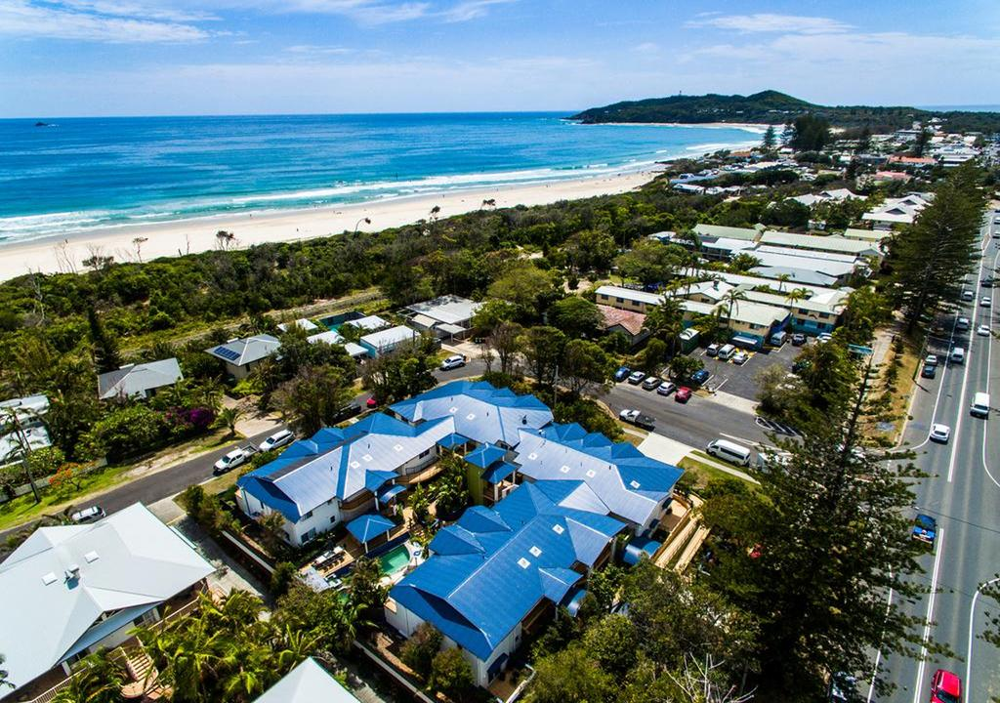
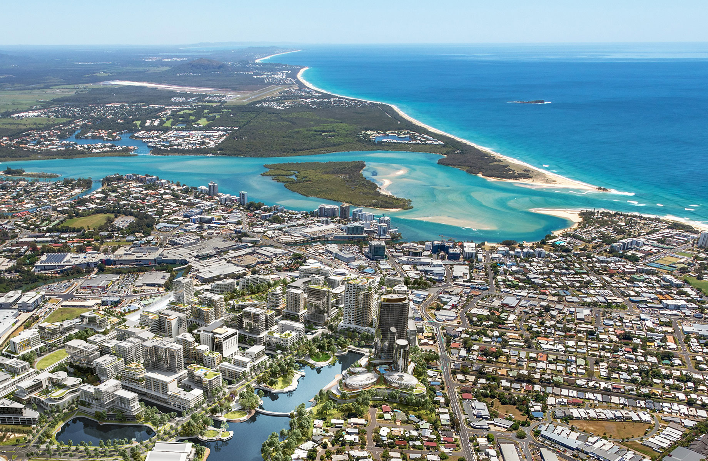

Guia de Turismo Australiano
Gold Coast

Gold Coast é uma cidade litorânea localizada no sudeste de Queensland, na costa leste da Austrália. A cidade está a 94 quilômetros ao sul de Brisbane, a capital do estado. É a segunda cidade mais populosa do estado e a sexta cidade mais populosa do país. A área metropolitana de Gold Coast inclui Tweed Heads, no estado de Nova Gales do Sul, e converge para a Grande Brisbane, que faz parte de uma aglomeração urbana mais vasta formada por mais de 3 milhões de pessoas.
Embora a origem do nome da cidade seja discutível, o nome de "Gold Coast" foi cunhado por investidores imobiliários. O primeiro assentamento na região foi como uma colônia penal em Redcliffe. A região de Gold Coast permaneceu praticamente desabitado por europeus até 1823, quando o explorador John Oxley aterrou na praia. O fornecimento de cedro vermelho do campo atraiu pessoas para a área em meados do século XIX. Mais tarde, em 1875, o local se estabeleceu e cresceu com uma reputação como um destino de férias isolado para os membros da classe alta de Brisbane.
A região de Gold Coast cresceu significativamente após o estabelecimento do hotel Surfers Paradise no final de 1920. A área cresceu na década de 1980 como um destino turístico importante e, em 1994, a jurisdição do governo local foi ampliada para abranger a maior parte da área metropolitana de Gold Coast, tornando-se a segunda área de governo local mais populosa área na Austrália, depois da cidade de Brisbane. A cidade é hoje um importante destino, com seu clima subtropical ensolarado, é conhecida por ser a Miami-Orlando da Austrália devido as suas praias adequadas para o surf, arranha-céus, parques temáticos e vida noturna, o que torna o turismo uma de suas indústrias mais significativas. A cidade sediou os Jogos da Commonwealth de 2018.
Byron Bay

Byron Bay (Cavvanbah em aborígene) é uma cidade no estado de Nova Gales do Sul e tem na sua área o ponto mais oriental da Austrália continental, o Cabo Byron. A cidade é o núcleo do Byron Shire Council, contando com uma população de 30000 habitantes.
James Cook deu nome ao Cabo Byron em honra do circum-navegador John Byron, avô do poeta inglês Lord Byron. Os primeiros europeus chegaram em 1770, quando foram estabelecidas as primeiras comunidades pesqueiras. Durante a década de 70, a cidade foi um reduto da cultura hippie na Austrália. O turismo é atualmente a principal fonte de renda da cidade. Desde a década de 90, o governo de Nova Gales do Sul tem tentado combater o tráfico de drogas na região.
Oferece praias de areia branca onde é praticado surf, com águas quentes e selvas tropicais naturais. A banda Parkway Drive é originária da cidade.
Sunshine Coast

Sunshine Coast é uma área periurbana e a terceira área mais populosa do estado australiano de Queensland . Localizada 100 km (62 milhas) ao norte do centro de Brisbane, no sudeste de Queensland , na costa do Mar de Coral , sua área urbana se estende por aproximadamente 60 km (37 milhas) de costa e interior, de Pelican Waters a Tewantin . A população urbana estimada de Sunshine Coast em junho de 2018 era de 333.436, tornando-a a 9ª mais populosa do país. A população da área cresceu continuamente a uma taxa média anual de 2,4% ano a ano durante os cinco anos até 2018.
A área foi colonizada pela primeira vez por papuasianos que migraram do norte da Austrália. Os europeus estabeleceram-se na área no século 19, com o desenvolvimento progredindo lentamente até que o turismo se tornou uma indústria importante. A área tem vários centros costeiros em Caloundra , Kawana Waters , Maroochydore e Noosa Heads . Nambour e Maleny desenvolveram-se como centros comerciais primários para o interior, embora Maleny esteja fora da área urbana definida pelo ABS a que este artigo se refere.
A Sunshine Coast, como um termo reconhecido pela maioria dos australianos, é o distrito definido em 1967 como "a área contida nos condados de Landsborough , Maroochy e Noosa , mas excluindo a Ilha Bribie ". Seu uso é freqüentemente coloquial , entretanto. Desde 2014, o distrito de Sunshine Coast foi dividido em duas áreas do governo local , a região de Sunshine Coast e o Shire of Noosa , que administram as partes sul e norte da Sunshine Coast, respectivamente.
Brisbane

Brisbane é a capital do estado australiano de Queensland, terceira maior cidade e o segundo maior "hub" economico, administrativo, cultural e urbano do leste do país. É banhada pelo Oceano Pacífico e é em seu território que deságua do rio Brisbane, o qual dá nome a cidade.
Segundo dados estimados para o ano de 2014, possuí uma população absoluta de 2.274.600 habitantes vivendo dentro de seus limites oficiais — fazendo dela a terceira maior cidade australiana em termos populacionais, atrás de Sydney e Melbourne. Desse total de 2.2 milhões de habitantes de Brisbane, cerca de 1.000.000 viviam na cidade de Brisbane propriamente dita no mesmo período e algo em torno de 1.200.000 em seus quatro subúrbios satélites integrados, no mesmo ano. Já sua área metropolitana, a terceira mais populosa da Austrália, que se estende por toda a conurbação do sudeste do estado de Queensland, abrigava 3.4 milhões de pessoas segundo o censo australiano de 2014, ou cerca de 70% da população de toda Queensland (que foi estimada no mesmo período em 4.8 milhões de habitantes). Está situada a 945 quilômetros a nordeste da capital do país, Canberra, e a cerca de 733 quilômetros ao norte de Sydney, principal cidade do país.
Brisbane é uma das cidades mais antigas da Austrália. Embora tenha sido fundada como parte da colônia de povoamento britânica no leste do país em 1825, a área que hoje é ocupada pela cidade já era volumosamente habitada séculos antes da chegada dos primeiros europeus por aborígenas das tribos Turrbal e Jagera. Ademais, Brisbane floresceu ao longo dos séculos XIX e XX ao abrigar, no período, contínuos grupos de colonos, majoritariamente oriundos da Grã-Bretanha, que na cidade e seus arredores procuravam se estabelecer, fazendo expandir o comércio e a indústria em seu território. Esse fluxo foi significativamente acentuado durante a Primeira e a Segunda Guerra Mundial, e continuou, embora em declínio, por algum tempo ao longo dos anos 50 e 60. Hoje, Brisbane é um dos principais centros turísticos da Austrália, porta de entrada para a indústria do turismo no estado de Queensland e em todo o leste e nordeste do país. Em 2010, foi eleita a 36ª cidade mais "habitável" do mundo, que leva em consideração níveis de segurança pública, limpeza urbana, transparência governamental, bem estar social e conservação dos patrimónios públicos.